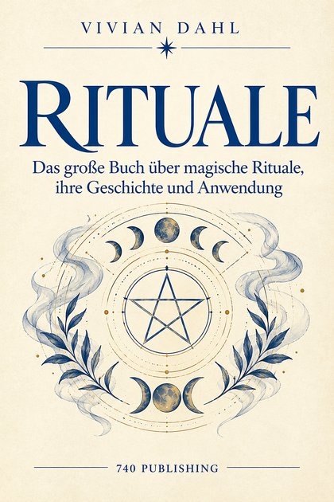

Sachbuch
RITUALE
Das große Buch über Magie, Zauber, Bräuche und dein eigenes Ritual
Du klopfst auf Holz, zündest vor einem schweren Tag eine Kerze an und drückst jemandem die Daumen, und an Magie glaubst du eigentlich nicht. Dieses Buch erzählt, woher unsere Rituale kommen, warum sie uns guttun, und zeigt dir mit 191 Ritualen zum Selbermachen, wie du eigene gestaltest. Nach „Astrologie“ und „Schamanismus“ das dritte große Buch von Vivian Dahl.
E-Book 11,99 €Taschenbuch 40,99 €Hardcover 46,99 €
Erhältlich als E-Book, Taschenbuch & Hardcover
E-Bookbei epubli kaufenTaschenbuchbei epubli kaufenTaschenbuchbei Amazon kaufenHardcoverbei epubli kaufenHardcoverbei Amazon kaufen
E-Book: ISBN 978-3-565876-35-8 · Taschenbuch: ISBN 978-3-565876-19-8 · Hardcover: ISBN 978-3-565876-25-9